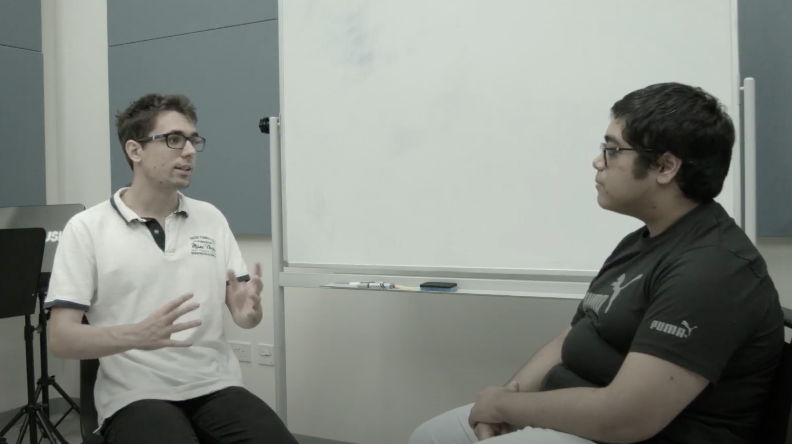
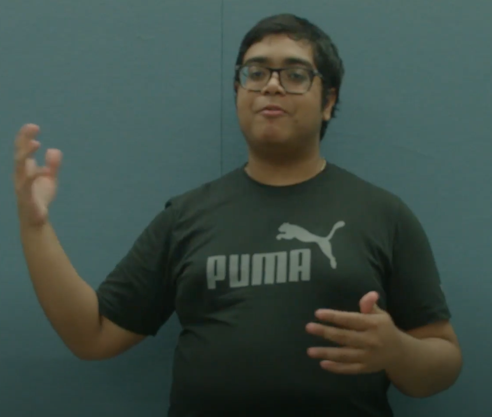
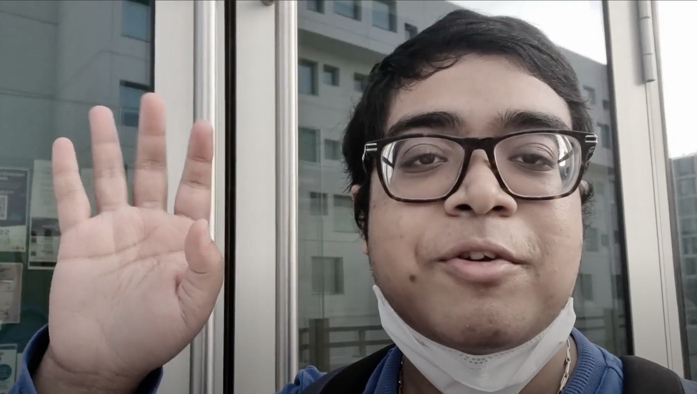

Exclusive Interview with CS Professor (Trailer up on vids4you!)
by ABHIJEET RAY - February 16, 2022
Hello Fellow Travelers!
The next episode of The Freshman Express will be my most ambitious one yet. I had an exclusive interview with the newest professor from the Computer Science department, Prof. Matt Hackfuse. How exciting! The whole thing is about an hour, and it's taking forever to edit haha ... But have no fear, I have a trailer for you with snippets from the interview!
As usual, you’ll be able to watch the full interview on vids4you! Tune in and subscribe to get a notification when it comes out!

NYUAD Life Hacks
by ABHIJEET RAY - January 28, 2022
Hello Fellow Travelers!
Phew! Who knew that another Covid variant would cancel our J-Terms (a short term in January) and hold us back again, huh? I’m sorry that this video got delayed for so long. I just wasn't able to get back to campus until today. But, let’s head on!
For my latest video, I will present to you three must-know life hacks for any NYUAD student. These hacks are things which seem very simple, but yet often stump students when experiencing them for the first time. So, why don’t you head to my channel now and check the video out? I’m sure it will be informative!
Also, make sure to subscribe so you don’t miss the follow-up videos to this!

Introducing the Blackmagic Pocket Cinema Camera 4K
by ABHIJEET RAY - December 20, 2021
UPDATE: Video Delayed to January 28
Hello Fellow Travelers! Finals are finally over and I think I did pretty well, fingers crossed!
But, I am more excited to let you all in on a very interesting development in my journey. While making videos for the past 3 months,I have also been training my skills with using a film camera. And now, I even have one of my own!
Let me introduce you to the Blackmagic Pocket Cinema Camera 4K. This is a professional portable video camera that will give me the freedom to record professional quality videos at a fairly reasonable price. Tune in on January 14 to see the results! I’m excited to show you!
Campus Mega Tour Series Part 1: The Palms
by ABHIJEET RAY - October 15, 2021
Hey Everyone!
I’ve decided to launch a new series of videos where I take you on a detailed tour at some of the most popular places on campus. To kick off this special tour, I present to you — The Palms! There could not be any other spot on campus that is both serene and lively at the same time.
So, without further ado, check out my latest video on my vids4you page (as usual, click the picture!) and make sure to like and subscribe to be notified of the upcoming parts of the Campus Mega Tour.
P.S. Thank you roomie for recording!
First Impressions and Dorm Tour (on vids4you!)
by ABHIJEET RAY - September 4, 2021

Hey guys!
Check out my first video on vids4you (click the picture!) where I show you an exclusive first look at the NYUAD campus and my dorm for this semester!
Make sure to like, share, and subscribe, and thank you for being a part of our little community!
Hello World!
by ABHIJEET RAY - August 10, 2021
I’m Abhijeet Ray, an incoming freshman at NYUAD, and this is The Freshman Express. My aim in this blog is to give you all a sneak peek at the freshman life at NYU Abu Dhabi.
We’ll be at campus very soon and I for one am super excited! Don’t forget to tune in to this blog in around 3 weeks for a campus tour video!